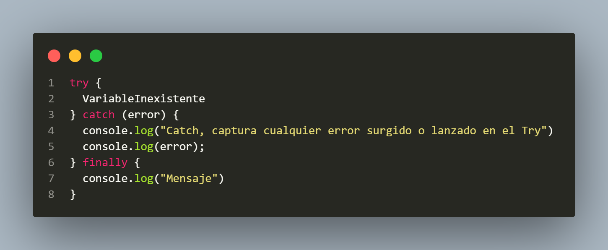

La Depuración es el proceso de identificar, analizar y corregir errores o problemas en un programa de software. Es una parte crucial del desarrollo de software para asegurar que el código funcione correctamente y cumpla con los requisitos establecidos. Implica identificar errores, analizar el comportamiento del programa, hacer correcciones, y validar que las soluciones sean efectivas.
La implementación de try-catch es solo una parte del proceso de depuración , pero es fundamental para manejar errores de manera efectiva y mejorar la robustez del código.
try-catch-finally es una estructura en JavaScript (y otros lenguajes de programación) que se utiliza para manejar errores o excepciones en el código, asegurando que incluso si ocurre un error, el programa no se interrumpa de forma inesperada. Gracias a esto no nos saltara el tipico mensaje de Error de Javascript y además la estructura nos dira en que nos equivocamos.
Finally es útil para limpieza de recursos (cerrar archivos, conexiones) o acciones críticas que deben ejecutarse sin importar lo que pase en el bloque try o catch. (Es opcional y demás este bloque no se utiliza mucho, mas que todo en BACKEND)
El programa no se interrumpe y además te muestra los errores.
El programa se interrumpira
La función isNaN() (abreviatura de "is Not a Number") se utiliza para comprobar si el valor de una variable no es un número. Si el valor de numero es "a" (una cadena), isNaN(numero) devolverá true, indicando que no es un número. Entonces se dara paso a mostrar nuestro código personalizado (Esto no solo lo podemos hacer con isNaN, podemos jugar y hacer varias condiciones)
Usar un try-catch con un error personalizado es perfecto para manejar situaciones como cuando un usuario ingresa un dato no numérico. Supongamos que tienes un formulario o una entrada donde el usuario debe ingresar un número. Si ingresa un valor que no es numérico, puedes manejarlo con try-catch y un error personalizado para darle un mensaje adecuado y evitar que tu aplicación falle inesperadamente. (Como anteriormente dije, podemos cualquier condición dependiendo de que queremos evaluar en el código)
Si ocurre un error en el código y no hay un bloque try-catch para manejarlo, el programa se detendrá abruptamente y mostrará un mensaje de error en la consola. Esto interrumpe la ejecución de la aplicación y puede resultar en una mala experiencia para el usuario.